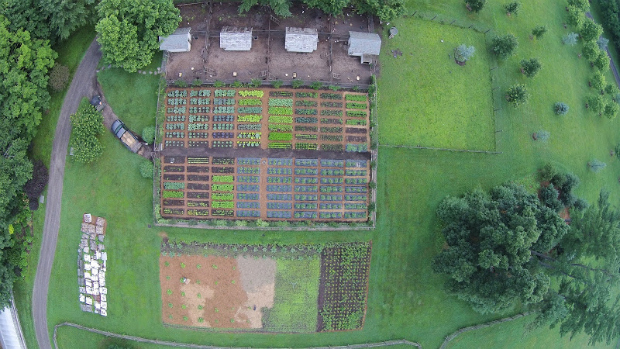

<!--
  Generated template for the TentacleSingle page.

  See http://ionicframework.com/docs/components/#navigation for more info on
  Ionic pages and navigation.
-->
<ion-header>

  <ion-navbar>
    <ion-title>Tentacle 1 Detail</ion-title>
  </ion-navbar>

</ion-header>


<ion-content padding>
<ion-item><h1>{{currentTentacle && currentTentacle.name}}</h1></ion-item>
<ion-item><ion-icon name="{{ currentTentacle && showSoilState(currentTentacle.currentSoilState) }}"></ion-icon> Soil State: {{ currentTentacle && currentTentacle.currentSoilState*100 | number }}%
</ion-item>
<ion-item><ion-icon name='battery-full'></ion-icon> Battery status: {{ currentTentacle && currentTentacle.soc*100 | number }}%  </ion-item>
<div>

  

</div>

</ion-content>
